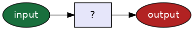
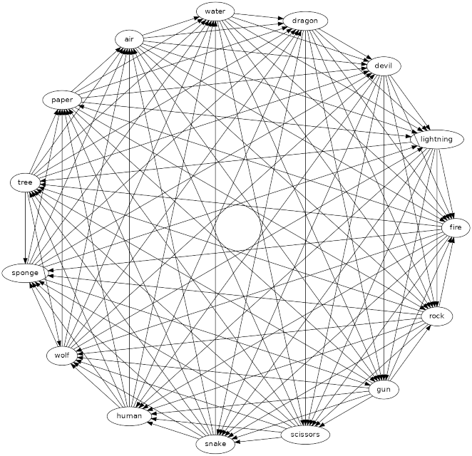

Algoritmen#

Bijna alle vragen zijn te beschrijven als een input-, output probleem, de uitdaging van programmeren is het bedenken hoe het kan worden opgelost.
Een algoritme is een stappenplan, een recept, om van een bepaalde input tot een gewenste output te komen.
Dit klinkt abstract! We gaan proberen het concreet te maken met een voorbeeld waar het doel is het spel steen, papier en schaar tegen een computer te spelen.
Maar voordat we het spel kunnen gaan spelen moeten we eerst stilstaan bij wat input en output kan zijn…
Input#
met een gebruikersnaam en wachtwoord inloggen op een site
het herkennen van dieren op een foto
het plaatsen van een bestelling in een webwinkel
Input heeft vele mogelijke vormen, je zou hier misschien meer voorbeelden kunnen bedenken? In alle gevallen zal de input het begin zijn van één of meer handelingen (algoritme) die nodig zijn om tot een gewenst resultaat te komen (output).

Op basis van de input zal het algoritme (de website, de app) vaak keuzen moeten maken. Dit zijn dezelfde keuzen die jij ook vaak zal moeten maken, bijvoorbeeld als je voor een kruising staat: sla je links- of rechtsaf om thuis te komen?
Kiezen#
is de combinatie van gebruikersnaam en wachtwoord geldig?
is de afbeelding op de foto een hond of een kat (of anders)?
staat voldoende saldo op de rekening voor een aankoop?
Op basis van een input zal het algoritme een keuze moeten maken…
Output#
de login is helaas ongeldig, probeer het opnieuw
de afbeelding is van een kat
onvoldoende saldo, deze aankoop wordt geannuleerd
Dit zijn mogelijke uitkomsten, de keuzes die een algoritme maakt bepalen de output!
Steen, papier en schaar#

We gaan het spel steen, papier en schaar spelen tegen de computer. Het programma zal steeds moeten kiezen: wie is volgens de regels van het spel de winnaar?
Rock, Paper, Scissors, Lizard, Spock#

Een variant met 5 opties (RPS-5)! Dit is een variant met de toevoeging van lizard en Spock (van de serie Star Trek), zoals te zien in een aflevering van de Big Bang Theory - volg de link voor de spelregels.

The World Rock Paper Scissors Association: https://www.wrpsa.com
Als je dacht dat steen papier en schaar zomaar een spel is dan vergis je je! Er is zelfs een heuse World Rock Paper Scissors Association waar je met anderen het spel kan spelen en het is ook dé plek voor het bedenken van nieuwe varianten.

Een variant met 15 opties (RPS-15)! Als dit jouw ding is dan is The World Rock Paper Scissors Association de plek om het te gaan spelen…
Je ziet dat de complexiteit heel snel toeneemt maar het probleem blijft hetzelfde! Op basis van de input van de computer en een gebruiker zal het algoritme nog steeds dezelfde keuzen moeten maken om volgens de regels van het spel tot een output te komen.
Het probleem#
We gaan nu terug naar waar we mee zijn begonnen, hoe kunnen we steen, papier en schaar uitwerken als een input-, output probleem? Wat is de input en wat is de mogelijke output en misschien het meest belangrijk, hoe (met welk algoritme) komen we tot de output?
Input#
Een lijst van mogelijke opties: “steen”, “papier” of “schaar”
Gebruiker: toetsenbord
Computer: een willekeurige (random) keus uit de lijst
Output#
Een tekst op het scherm, mogelijke uitkomsten:
“Gelijkspel”
“Ik win!” (de computer wint)
“Jij wint…” (de gebruiker wint)

Als je kijkt naar de input zie je comp en user, waar comp verwijst naar de waarde die de computer heeft gekozen en user naar de waarde die de gebruiker heeft gekozen. Het met een naam verwijzen naar een waarde is iets dat je straks in Python ook terug zult zien komen!
De mogelijke outputs staan bij het spel altijd vast, daar zijn geen verwijzingen voor nodig want een output is in dit geval een vaste tekst. Let op, we gebruiken hier aanhalingstekens (”) om aan te geven dat het een letterlijke tekst betreft en het gebruik van aanhalingstekens om iets als tekst aan te duiden zal je ook in Python terugzien!
Condities#
Kiezen: naar links of naar rechts?
Het vergelijken van input!

Nu komen we terug op kiezen: een conditie (een voorwaarde, en soms ook een test genoemd) kan maar twee mogelijke uitkomsten hebben: waar (True) of niet waar (False).
Laten we beginnen met de meest voor de hand liggende conditie, het geval dat de input van de computer gelijk is aan die van de gebruiker. Als de inputs gelijk zijn (de conditie is waar, of True) dan is het spel klaar en is de output duidelijk (“Gelijkspel”).
Let op, == betekent hier is gelijk aan en dit is de eerste Python syntax waar je mee kennismaakt! Waarom geen enkele = zal je jezelf misschien afvragen? De enkele = wordt al voor iets anders gebruikt zoals we straks zullen zien wanneer we het volledige algoritme in Python gaan schrijven!
Maar wat als dit niet het geval is (de conditie is niet waar, of False)?

De inputs van de computer en gebruiker verschillen en nu moeten we op zoek naar de winnende combinaties. We kiezen het perspectief van de computer en gaan door met een eerstvolgende conditie, het geval dat de computer “steen” heeft gekozen. Nu kunnen we weer twee kanten op!
In deze situatie kan de computer alleen maar winnen als de gebruiker “schaar” heeft gekozen, dus daar zullen we op moeten vergelijken, en dit is een nieuwe conditie die aan het diagram kan worden toegevoegd.

De nieuwe conditie (als de gebruiker “schaar” heeft gekozen) kent natuurlijk ook maar twee mogelijke uitkomsten. Indien dit waar is (True) heeft de computer gewonnen en is de output “Ik win!”, als dit niet waar is (False) dan is de output “Jij wint…” en is het einde van het spel (programma) bereikt.
Wat moet nu volgen als de computer niet voor “steen” heeft gekozen? We zullen dan op dezelfde manier de andere mogelijke combinaties moeten langslopen (de computer heeft óf “papier” óf “schaar” gekozen).

Hier zie je alle mogelijkheden verder uitgewerkt. Merk op dat de laatste conditie waar we de input van de computer testen (comp == "schaar") alleen maar waar kan zijn, het is de enige optie die overblijft en moét daarom wel waar zijn.
We hebben het probleem nu opgelost maar nu willen we dit laten uitvoeren door een computer. De computer zal ons diagram niet begrijpen en de oplossing zal vertaald moeten worden naar een vorm die een computer wél kan lezen en uitvoeren en hier is een programeertaal voor nodig.
Eindelijk komen we nu toe aan Python!
Terzijde, je ziet dat we veel tijd hebben besteed aan het uitdenken van het algoritme (het stappenplan, of recept) voor het spel steen, papier en schaar. Dit is natuurlijk logisch, want we moeten eerst een oplossing hebben voordat we het überhaupt kunnen schrijven in een programeertaal…
Python#

Python heeft een eigen logo, twee pythons om elkaar heen geslingerd en misschien heb je het al eens eerder gezien? Maar als we naar de geschiedenis kijken verwijst de naam Python naar iets heel anders dan slangen!

De programmeertaal Python is in 1991 ontworpen door Guido van Rossum in de tijd dat hij werkte bij de Universiteit van Amsterdam. Guido is fan van het Britse comedygezelschap Monty Python’s Flying Circus en dit was de inspiratie voor de naam Python.

Python is inmiddels uitgegroeid tot één van de meest populaire programmeertalen en wordt tegenwoording voor een groot aantal toepassingen gebruikt, bijvoorbeeld voor webapplicaties, machine learning, missies naar Mars en nu ook voor steen, papier en schaar!
Input#
input("Jouw keus? ")
Hoe kan de input van een gebruiker, in dit geval wat een gebruiker heeft getypt door een computer worden gelezen?
input is een functie. Een functie is een “verpakt” algoritme en in dit geval is het een algoritme dat de door de gebruiker getypte karakters (input) verzamelt en deze verzameling van karakters als output heeft.
Een functie kan ook input accepteren, in dit geval is het de tekst: “Jouw keus? “. We zullen strak zien dat de functie input dit gebruikt om deze vriendelijke tekst op het scherm af te drukken (een output!) om de gebruiker om input te vragen.
user = input("Jouw keus? ")
Denk aan het uitgewerkte diagram, de input van de gebruiker hebben we meerdere keren nodig en we verwezen daar steeds naar via de naam user.
Hier geven we de output van de functie input deze naam, lees dit als ken het reusltaat (output) van de functie input toe aan de naam user.
En let op, voor voor deze toekenning wordt een enkele = gebruikt!
comp = choice(["steen", "papier", "schaar"])
De input van de computer zal een keus zijn, een willekeurige keus uit de lijst van mogelijke opties “steen”, “papier” of “schaar”. Ook hier gebruiken we een functie, choice, en net als input accepteert het een input, in dit geval een lijst van mogelijke opties. De output van de functie choice kennen we toe aan de naam comp.
Je ziet hier dat je met vierkante haken in Python een lijst van waarden kan uitdrukken, in dit geval de opties van het spel: ["steen", "papier", "schaar"].
from random import choice
De functies print en input kan je altijd gebruiken, maar dit is niet het geval voor alle Python functies, bijvoorbeeld de functie choice. In dit geval zal je Python moeten laten weten dat je deze functie wilt gaan gebruiken. Python heeft standaard een groot aantal modules met additionele functies en in dit geval zeggen we gebruik de functie choice uit de module random.
Waarom kan je print en input altijd gebruiken zonder dat je ze hoeft te importeren, maar choice weer wel? Dit is een bewuste keuze, print en input worden zó vaak in programma’s gebruikt dat ze voor ons gemak altijd al worden geïmporteerd.
Let op, import statements als deze plaats je altijd bovenaan jouw programma!
Output#
print("Ik win!")
Voor de output van het algoritme gebruiken we weer een functie! De functie print zal de waarde die het als argument als input ontvangt op het scherm “printen”.
De naam print heeft een historische betekenis want het verwijst nog naar de tijd dat output écht op papier werd geprint, dus vóór de tijd van beeldschermen!
Condities#
Conditionele statements: naar links of naar rechts?
if comp == user:
print("Gelijkspel")
else:
...
statements kunnen andere statements bevatten!
if comp == user:
print("Gelijkspel")
else:
if comp == "steen":
...
else:
...
De meest voor de hand liggende conditie om als eerste te testen is of de input van de gebruiker gelijk is aan de input van de computer. Eerder hebben de deze inputs namen gegeven die verwijzen naar de waarden (comp en user). Deze namen kunnen we gebruiken om een eerste conditie te schrijven als comp == user. Het dubbele = teken betekent hier is gelijk aan.
Als (if) een conditie waar is (True) doe dan het volgende, doe anders (else) …
Let trouwens op de inspringing na alles wat volgt achter de dubbele punt achter if en else, dit is verplichte Python syntax om om aan te geven dat alles wat volgt óf bij if óf bij else hoort. De afspraak is dat deze inspinging vier spaties groot is…
comp = "steen"
user = "steen"
Bijvoorbeeld, als zowel de computer als de gebruiker “steen” zou hebben gekozen dan kunnen we Python deze expressie laten testen.
Let op, dit is een voorbeeld: we kennen in dit voorbeeld de waarden (“steen”) direct toe aan de namen comp en user, en gebruiken dus niet een input via de functies input en choice, dit gaan we straks doen!
comp == user
True
Dit is wat Python als resultaat teruggeeft. We hebben in de diagrammen True gebruikt om waar aan te geven maar Python geeft dus letterlijk True als waarde terug!
if comp == user:
print("Gelijkspel")
else:
...
Gelijkspel
Als in dit voorbeeld de conditie comp == user waar is dan zal de output “Gelijkspel” zijn, zoals verwacht. Dit begin gaan we verder gebruiken om het algoritme dat we hebben bedacht verder uit te werken in Python.
Uitwerking#
from random import choice
user = input("Jouw keus? ")
comp = choice(["steen", "papier", "schaar"])
print("Jouw keus is:", user)
print("Mijn keus is:", comp)
if comp == user:
print("Gelijkspel")
else:
if comp == "steen":
if user == "schaar":
print("Ik win!")
else:
print("Jij wint...")
else:
if comp == "papier":
if user == "steen":
print("Ik win!")
else:
print("Jij wint...")
else:
if comp == "schaar":
if user == "papier":
print("Ik win!")
else:
print("Jij wint...")
# "schaar" is de laatste optie,
# er is geen else meer mogelijk